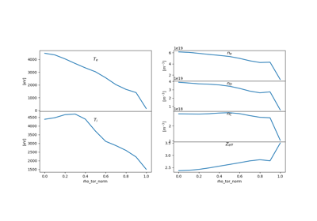
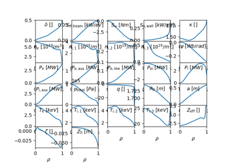
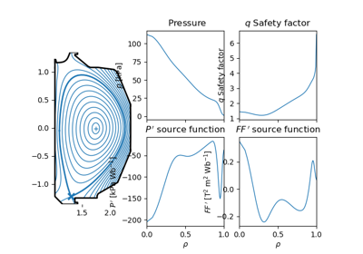
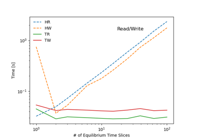

Gallery of Examples¶
General-purpose and introductory examples from OMAS


Work with ITER IMAS scenario database
Work with ITER IMAS scenario database



Rapid plot


gEQDSK + statefile to input.profiles
gEQDSK + statefile to input.profiles

OMFIT classes and plotting



Scaling IMAS performance